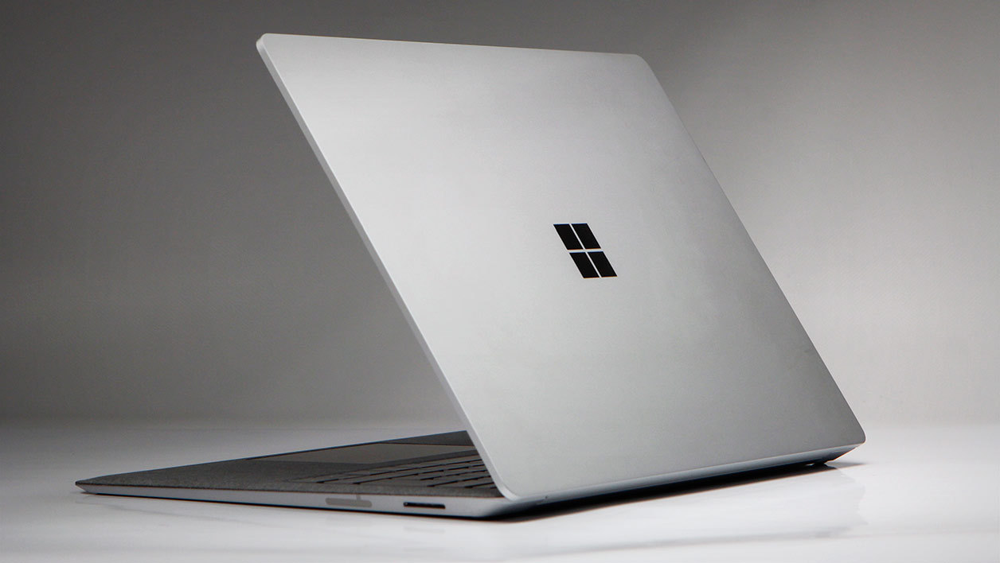
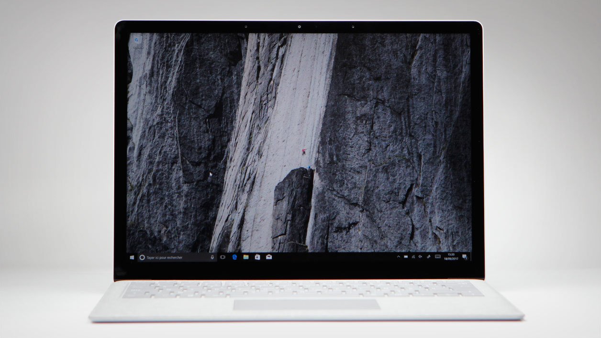
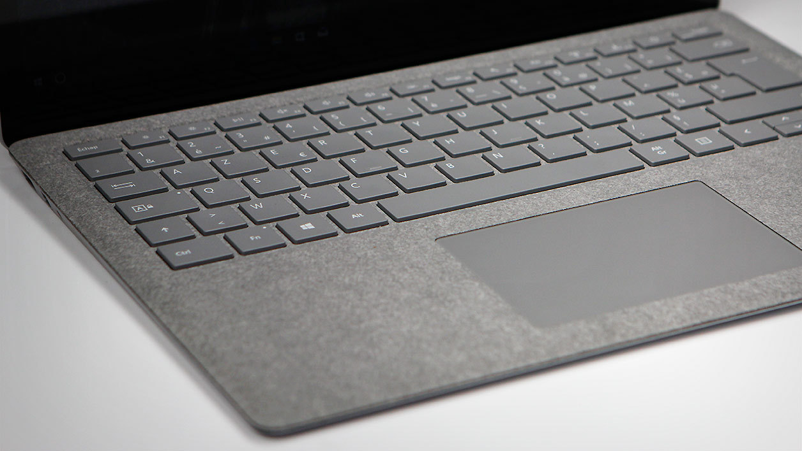
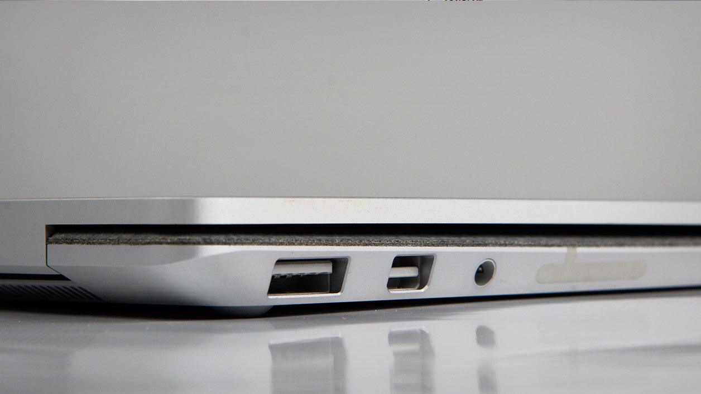
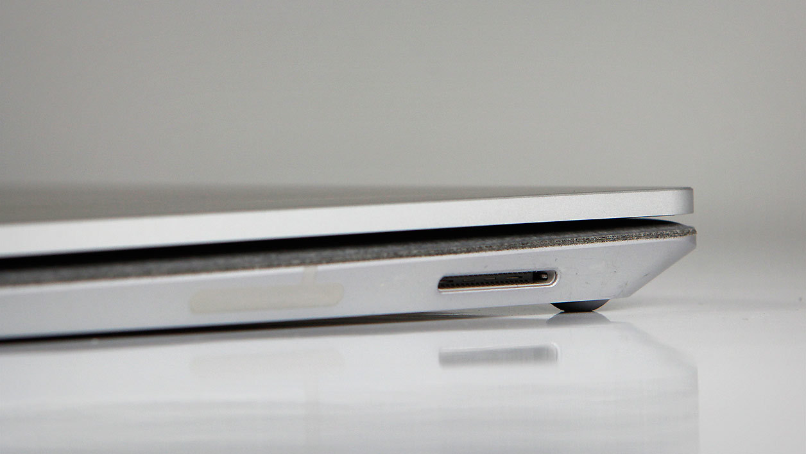
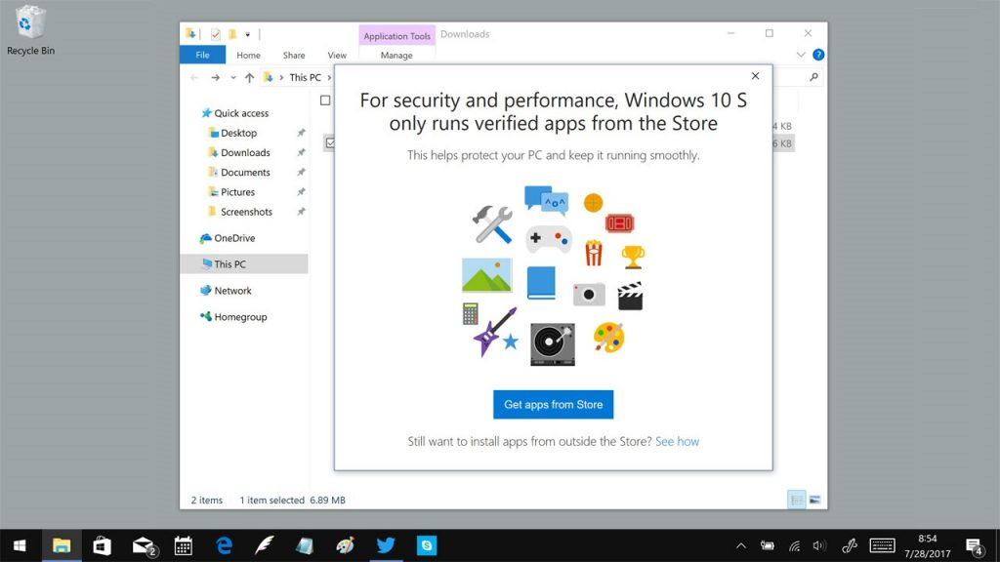
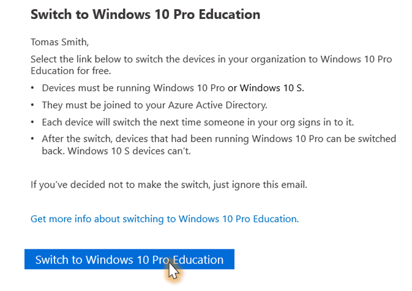

Microsoft’s Surface Laptop has been given a difficult mission: to make its “highly secure” Windows 10 S operating system shine so brightly in the world of education that it eclipses Google’s Chromebooks. Can it pull this off?

Microsoft Surface Laptop (Core i5 8 GB 256 GB)
Pros
- +Its finish
- +The quality and definition of its display
- +Solid endurance
- +One year of Office 365 included
Cons
- – Frustrating Windows 10 S operating system
- – (Very) shiny display
- – A processor that throttles
- – Very limited connectivity
Released at the very beginning of the year, Surface Laptop is the first 100% Microsoft ultraportable PC. It completes the extensive family of Surface products – the most preeminent of which are the Surface Pro tablet and the convertible Surface Book. Contrary to its cousins, the Laptop was conceived essentially with students and teachers in mind – pretty much the world of education as a whole. At least this is how Microsoft presents its product; this is also the reason why it runs the Windows 10 S operating system, a more restrictive version of Windows 10 than the Family or Professional versions. However, having a “closed off” operating system doesn’t mean that the Surface Laptop is a low-priced computer. Quite the contrary!
Starting at 900 dollars, the Surface Laptop has billed itself as a contender in the high-end ultraportable category. Our test model is sold for 1200 dollars, let’s see if it is exclusively reserved for students.

Ever since Microsoft began producing its own computers, we have been waiting to see what this manufacturer would come up with in terms of portable PCs. We had to wait a few years before the Surface Laptop was officially released, but we have now gotten our hands on one!With the Laptop, we thought that Microsoft would try to compete with its usual competitors in the PC market: Dell, Acer, HP and the like. Or, more daringly, to confront Apple’s MacBook Pro. Nope, this tech giant from Redmond didn’t do either of these two things: Surface Laptop is an atypical machine due to its special OS – Windows 10 S. Similar to its cousins in terms of its interface, menus, and customization, the Surface Laptop is however much more limited in terms of the applications that it is able to run. In fact, it is impossible to install programs in the same way as on a traditional Windows 10 PC. We will speak in more detail about this point later on.
In fact, the Laptop’s intended target are the Chromebooks manufactured by Google and its partners – low-price computers that run the Chrome OS. Computers which are extremely popular among schools and other educational institutions since they offer limited functionality which requires minimal upkeep, all at a very affordable price (some of them for only a few hundred dollars). However, in terms of their finish and configuration, they can be somewhat lacking…It is, among other things, by concentrating on these two aspects that Microsoft hopes to differentiate its Laptop from the competition.
With its cloth, metal and magnesium finish, the Surface Laptop is very stylish
From an aesthetic point of view, the Surface Laptop is quite stylish. But, since everyone has different tastes, it is being offered in a burgundy, cobalt blue or gold and platinum finish – all of which are quite appealing. It also has one other unique feature – the inner portion of the case is entirely covered in Alcantara –which accentuates the backlit keyboard.

It is not really that surprising to find this type of unwoven and ultra-durable textile – used in the fashion, leather-working and automotive industries – on the Surface Laptop. In fact, the Signature Type Cover keyboards for the Surface Pro already made use of this material. When touched, it feels a little bit strange, but not unpleasant; it did, however, take us some time to get used to it. Soft without being silky smooth, it does not seem to be any higher or lower than the rest of the keyboard and does not cause any more sweating than plastic does. It is, however, hard to predict how well it will age. Visually, you will either love it or hate it (as I do), but once again, everything is a matter of personal taste.The rest of the computer is composed of metal – which is thick and brushed at the rear of the display – and of a thinner magnesium everywhere else.
The Surface Laptop’s thickness does not exceed 1.6 cm with the display shut (1.57 cm to be more precise) and it weighs in at 1.24 kg. It is thin and lightweight enough to be carried around in any sort of bag.The only real problem in terms of the Laptop’s portability is its rather hefty power supply which has a conventional block shape with a cable coming out of either side of it; it weighs 224 g, but has a full-sized USB port on one of its sides – which can be used as a power source for smartphones, etc.


While we are on the topic of connectivity, we would like to specify that the Surface Laptop is equipped with one conventional USB 3.0 port, one mini-DisplayPort video output, and one headphone jack. It would have been nice to have an SD card reader…The Laptop is equipped with Bluetooth 4.0 and Wi-Fi (n/ac). In essence, Microsoft has provided the bare minimum in terms of connectivity and continues to, rightly or wrongly, disregard USB Type-C connectivity.
With even thinner edges, we would have given this computer’s display top marks
The Surface Laptop is equipped with a 13.5 inch 3:2 format touchscreen; the borders around the display panel are not very wide, but unfortunately, they are not as thin as we would have liked them to be. The display panel’s definition exceeds Full HD (2256 X 1504 pixels).
To the naked eye, this display’s color rendition looks very good – something which we confirmed by looking at test photos and videos. We could not detect any dominant color or color imbalance of any kind – a pretty rare and surprising result!
The display panel’s average luminosity is 378 cd/m2 and its contrast ratio is 1477:1. The weak point of this display panel is the extreme shininess of its surface which picks up far too many parasitical reflections. These reflections can be countered by increasing the display’s luminosity, but we would have preferred that its Corning Gorilla glass surface have been given a better anti-reflective coating.
Windows 10 S: power users, run away!
It would be impossible for us not do discuss Windows 10 S since it comes preinstalled on the Surface Laptop. You should be aware of the fact that this version of the Windows 10 operating system is not well suited to everyone’s needs. Its main downside (but also its strength in some respects) is the Windows Store, the only source of applications for this operating system. It is impossible to install any software which does not originate from the Windows Store.

Furthermore, it should also be mentioned, that out of generosity, Microsoft is offering 1 year of Office 365 use with the Laptop, as well as 1 TB of Cloud storage space – which, as we will see later on will come in handy.
At any rate, when using this computer, you can’t help but feel like you are behind the wheel of a speedster that is not allowed to exceed 50 km/h. Since beneath the very good keyboard of our test model, the Laptop’s powerful hardware would be able to operate at its full potential if it was allowed to run more advanced software. The only solution is to upgrade the operating system to Windows 10 Pro – which users interested in this computer can do, free of charge, until March 2018.

A powerful hardware configuration with its strengths and weaknesses
Simple and efficient. The Surface Laptop’s hardware configuration consists of an Intel Core i5-7200U (2 cores/4 threads at 2.5 GHz) processor, 8 GB of RAM as well as a 256 GB SSD. This disk’s capacity may not be sufficient for storing all of your course materials, images, etc. Therefore, you should not hesitate to make use of cloud resources (One Drive and Google Drive) to store your files.
The Laptop’s graphics controller takes care of powering its display, but we will tell you right now that, at the display’s native resolution, it is not possible to play anything other than simple games available from the Windows Store. In order to conduct our tests, we had to migrate the operating system to Windows 10 Pro – which was easy to do and which allowed us to install our full suite of test software. In lambda usage scenarios, there were no problems to report, the Surface Laptop does what it is expected to do, and quietly too! Not once did the noise emitted by the computer’s ventilation system exceed 35.5 dB, even when the computer was pushed hard.
However, under maximum stress conditions (CPU and GPU), the Surface Laptop was quick to suffer from throttling problems. The computer starts out strong, the cores increase to their maximum Turbo Boost frequency (3.1 GHz) and then progressively decrease their frequency to 1.3 GHz, where they stay, according to OCCT test software. This is not very normal behavior at all! However, the impact that it has on the user’s comfort is limited. All you may notice is the slowing down of certain applications which demand both CPU and GPU resources.
Stranger still, we were unable to detect any excessive heating of the case (40.7°C max.) or of the keyboard. This would lead us to believe that the throttling problem is due to internal design considerations rather than to overheating. However, it was out of the question for us to dismantle the Surface Laptop since it is mission impossible to do so without damaging the keyboard.
The battery can easily last the whole day
Regardless of the version of Windows 10, this Microsoft computer was able to exceed 9 hours of battery autonomy for general computing use and was able to approach 9.5 hours for watching videos (versus the 14.5 hours advertised by Microsoft). The Surface Laptop was, however, unable to beat our 2017 battery autonomy champion, the Dell XPS 13 – which was able to run for 12 hours of general computing use; it does, however, have a less luminous display with fewer pixels than the Laptop’s.
The verdict
Microsoft Surface Laptop (Core i5 8 GB 256 GB)
Microsoft’s Surface Laptop has everything that it takes to succeed: a nice finish, good endurance, good image quality; however its rather limited Windows 10 S operating system, spoils everything. Fortunately, it will still be possible to upgrade the Laptop’s OS to Windows 10 Pro (until March 2018), which will expand this computer’s usability…so that it can be used as a veritable PC.
Read More:
Best Laptops for College Students under 500
Best Laptop under 500
Best Laptop for Video & Photo Editing